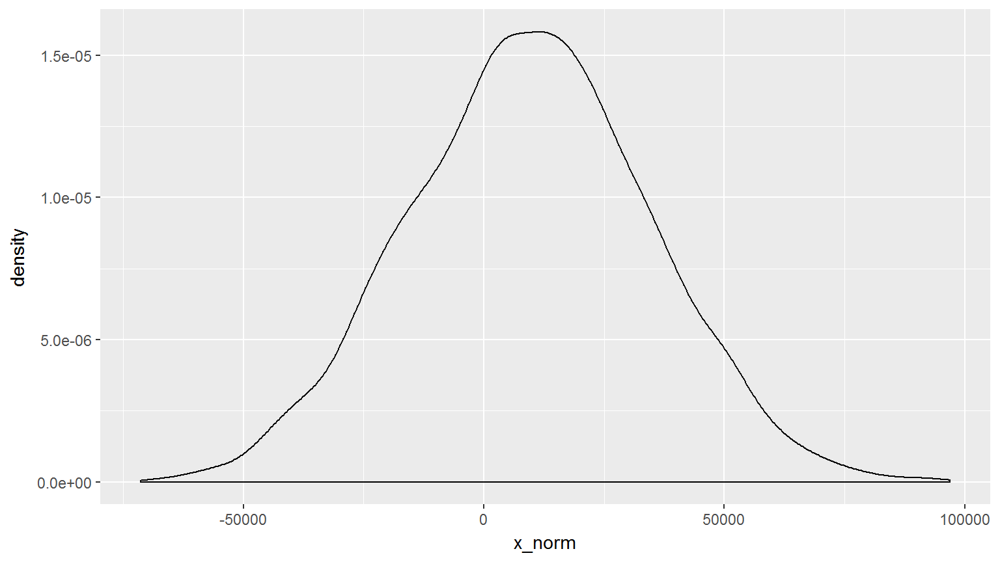
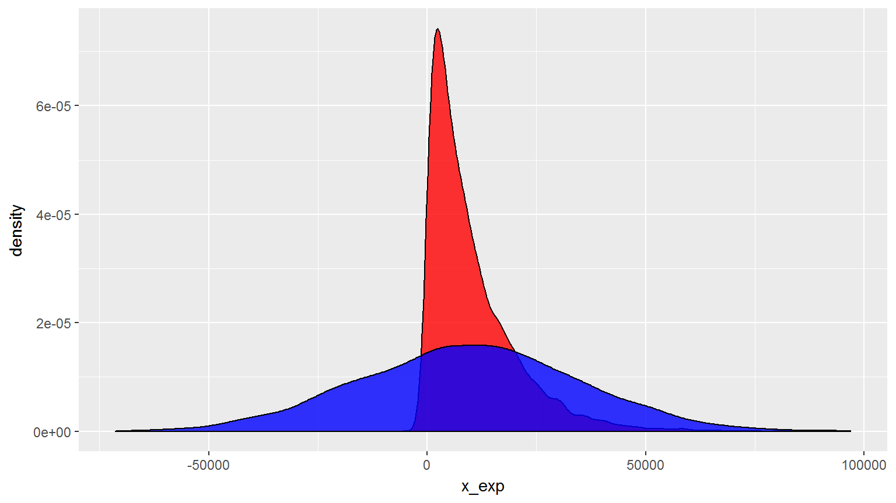
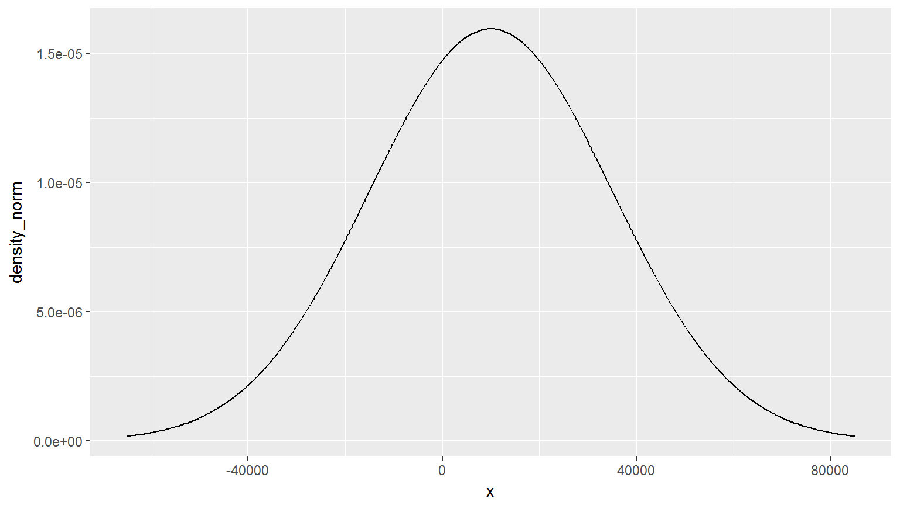
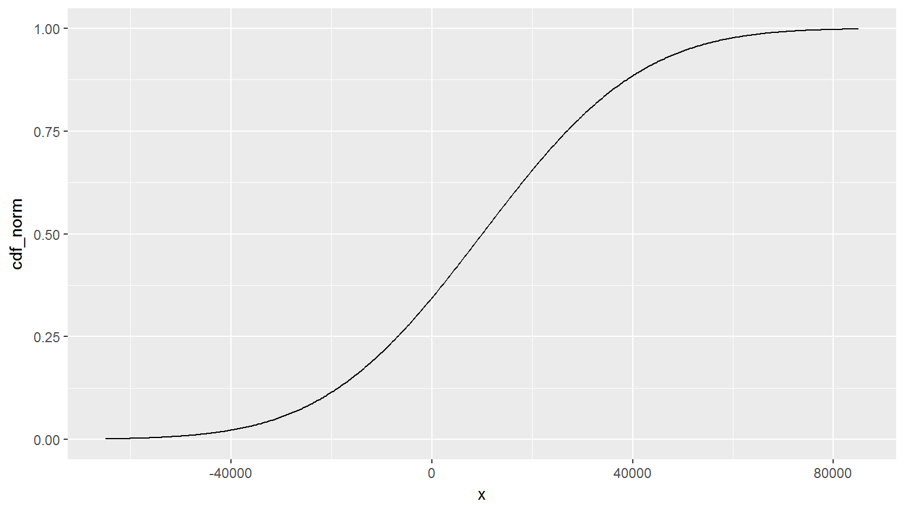
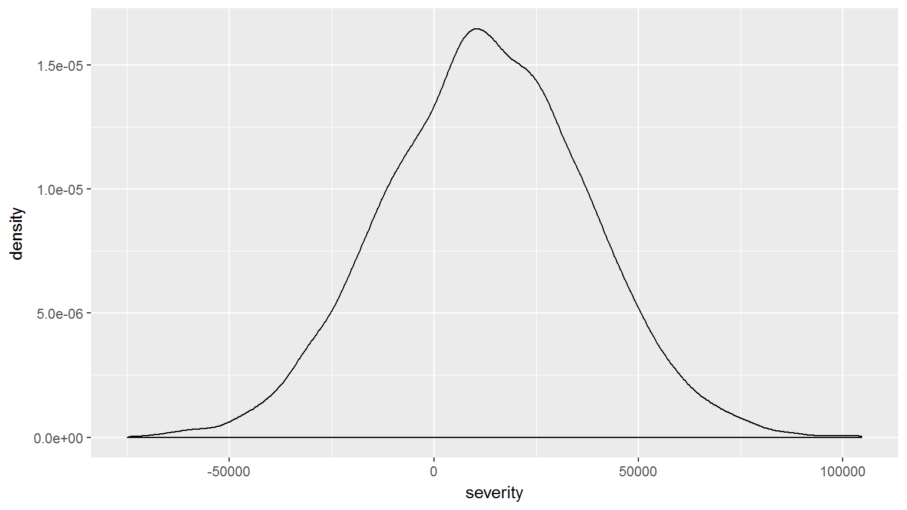
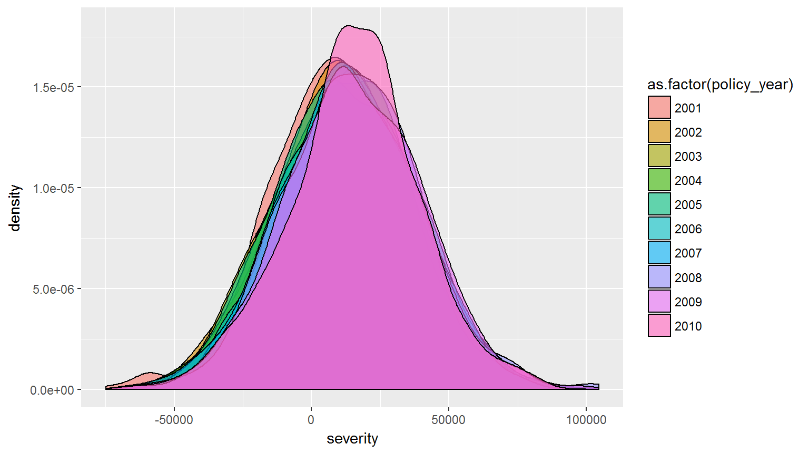
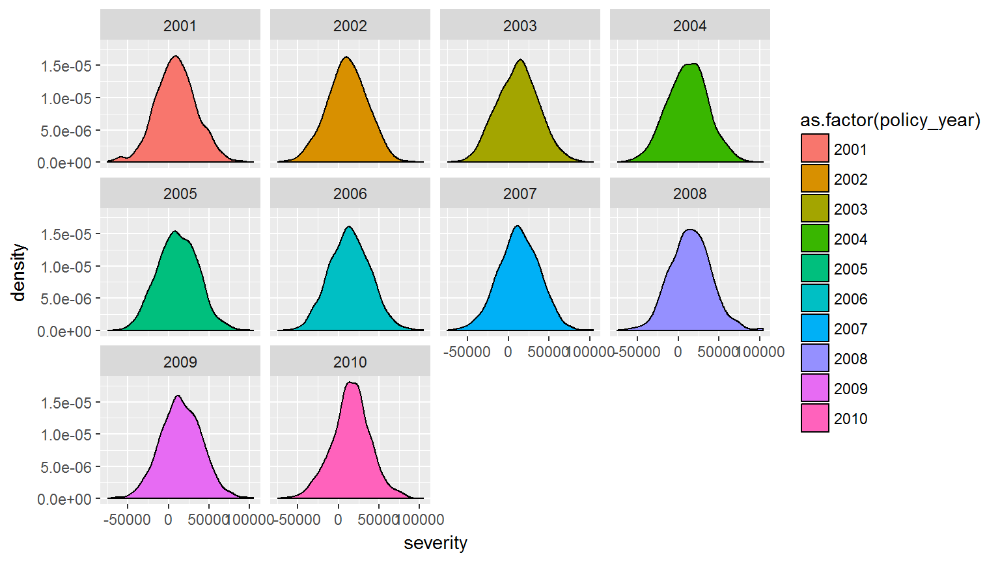

All probability distributions have four basic functions:
r_[DIST](n, PARAMS)
rnorm(10, 5, 10)
rlnorm(10)
rexp(10)
rgamma(10)dist_mean <- 10e3
dist_cv <- 2.5
dist_sd <- dist_mean * dist_cv
sims <- 5e3
norms <- rnorm(sims, dist_mean, dist_sd)
norms %>% head()
## [1] 320.3938 -4001.1831 39926.7513 -18559.4341 13208.5170 -40022.4748hist(norms)tbl_sims <- data.frame(
x_exp = rexp(sims, 1 / dist_mean)
, x_norm = rnorm(sims, dist_mean, dist_sd)
)tbl_sims %>%
ggplot(aes(x = x_norm)) +
geom_histogram()tbl_sims %>%
ggplot(aes(x_norm)) +
geom_density()
tbl_sims %>%
ggplot() +
geom_density(aes(x_exp), alpha = 0.8, fill = 'red') +
geom_density(aes(x_norm), alpha = 0.8, fill = 'blue')
plot_points <- 500
x_lims <- dist_mean + c(-1, 1) * 3 * dist_sd
tbl_plot <- data.frame(
x = seq(x_lims[1], x_lims[2], length.out = plot_points)
)
tbl_plot$density_norm <- dnorm(tbl_plot$x, dist_mean, dist_sd)tbl_plot %>%
ggplot(aes(x, density_norm)) +
geom_line()
tbl_plot$cdf_norm <- pnorm(tbl_plot$x, dist_mean, dist_sd)
tbl_plot %>%
ggplot(aes(x, cdf_norm)) +
geom_line()
You’re pricing treaty XOL and want to cede the top 1% per claim. Where is your attachment?
tails <- c(0.95, 0.98, 0.99)
qnorm(tails, dist_mean, dist_sd)
## [1] 51121.34 61343.72 68158.70Generate density and cdf plots for an exponential distribution
set.seed(1234)
policy_years <- 2001:2010
freq <- 1e3
num_claims <- rpois(length(policy_years), freq)
dist_means <- dist_mean * 1.05 ^ (policy_years - min(policy_years))
severity <- mapply(rnorm, num_claims, dist_means, MoreArgs = list(sd = dist_sd))
tbl_claim <- data.frame(
policy_year = rep(policy_years, num_claims)
, severity = unlist(severity))tbl_claim %>%
ggplot(aes(severity)) +
geom_density(alpha = 0.6)
tbl_claim %>%
ggplot(aes(severity, fill = as.factor(policy_year))) +
geom_density(alpha = 0.6)
tbl_claim %>%
ggplot(aes(severity, fill = as.factor(policy_year))) +
geom_density() +
facet_wrap(~ policy_year)
tbl_claim %>%
group_by(policy_year) %>%
summarise(med = median(severity))
## Warning: package 'bindrcpp' was built under R version 3.4.4
## # A tibble: 10 x 2
## policy_year med
## <int> <dbl>
## 1 2001 9002.
## 2 2002 11085.
## 3 2003 12404.
## 4 2004 11800.
## 5 2005 10788.
## 6 2006 13748.
## 7 2007 12938.
## 8 2008 14982.
## 9 2009 14402.
## 10 2010 15757.sampleGenerate a random sample of any discrete set of values.
set.seed(1234)
sample(1:100, 10)
## [1] 12 62 60 61 83 97 1 22 99 47Use the prob argument to weight the probabilities.
sample(1:3, prob = c(1, 1, 100), replace = TRUE)
## [1] 3 3 3To randomize the order of a vector, leave the default value for replace=FALSE.
set.seed(1234)
letters[sample(length(letters))]
## [1] "c" "p" "o" "x" "s" "n" "a" "e" "l" "i" "r" "q" "d" "m" "u" "j" "z"
## [18] "k" "b" "h" "g" "f" "t" "y" "w" "v"